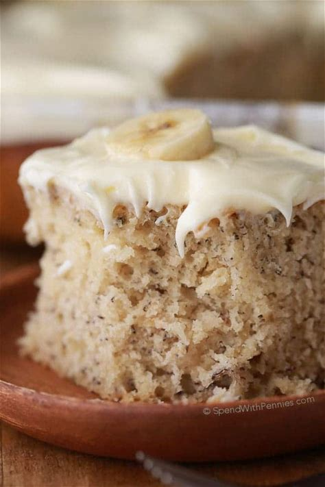

banana cake

description
a quick, easy to make and tasty
Ingredients
- 1 ½ cupsMilk
- 2 ½ tablespoons Lemon Juice (divided)
- 1 ⅓ cups Bananas (mashed)
- 1 cup Butter (softened)
- ½ cup Brown Sugar
- 1 cup White Sugar
- 3 Large Eggs
- 1 teaspoons Vanilla
- 3 cups Flour
- 1 ½ teaspoons Baking Soda
- ¼ teaspoon Salt
- 8 ounces Cream Cheese
- 1 teaspoon Lemon Juice
- 1 ½ teaspoons Lemon Zest (from 1 lemon)
- 3 ½ cups Powdered Sugar
Steps
- Preheat oven to 350°. Grease and flour a 9 x 13 pan.
- Place 1 ½ tablespoons lemon juice in a measuring cup. Top to 1 ½ cups with milk. Set aside.
- Mix together mashed banana with 1 tablespoon lemon juice, set aside.
- Beat together butter, brown and white sugar until combined. Add in eggs one at a time and vanilla. Mix on high until light and fluffy (almost the texture of frosting).
- Combine flour, baking soda and salt in a medium bowl. Alternate adding flour mixture and milk to egg mixture stirring just until combined. (Do not overmix). Fold in bananas. Pour into prepared pan.
- Put into the oven and reduce heat to 300°F. Bake 60 – 70 minutes (see note below) or just until toothpick inserted in center comes out clean (do not over bake).
- Remove from oven and place in the freezer for 45 minutes to make the cake extra moist. Cool completely before frosting.
- Cream together butter & cream cheese until fluffy. Add in lemon zest and juice.
- Add powdered sugar a little at a time until you reach desired consistency. Spread over cooled cake.